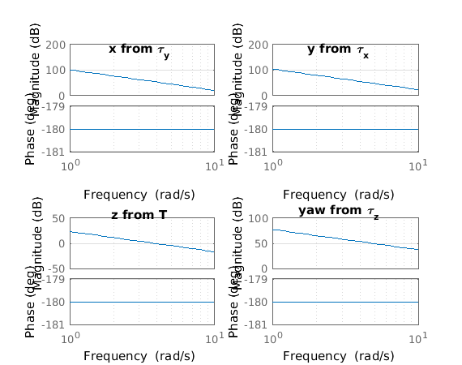
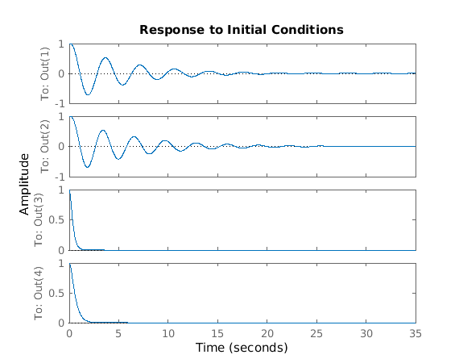

Contents
- Linearization of drone dynamics about hover & full-state feedback design
- 1.1) Simplified Dynamics
- 1.2) Linearizing Full Nonlinear Simulink Model (the model from Robotics Toolbox)
- 1.3) Comparing Results
- 2.1) Designing Full-state Feedback Controllers with Simplified Dynamics Model (1.1) via Pole Placement
- Now place your own poles for the decoupled subsystems separately
- Evaluate performance
Linearization of drone dynamics about hover & full-state feedback design
=============================== AUTHOR Fabian Riether CREATE DATE 2015/08/25 PURPOSE This code assists in linearizing drone dynamics and designing full-state feedback controls SPECIAL NOTES =============================== 2015/08/25 created ===============================
clear; close all % Load drone parameters from RoboticsToolbox mdl_quadrotor % Load drone parameters from file parameters_estimationcontrol M_transform = controlHelperParams.Ts2Q;
1.1) Simplified Dynamics
% Symbolic variables syms Pxw Pyw Pzw yaw pitch roll dpx dpy dpz p q r T tauy taup taur; symsvector = [Pxw; Pyw; Pzw ;yaw ;pitch ;roll ;dpx ;dpy ;dpz ;p ;q ;r ;T ;tauy ;taup ;taur]; % Inertia J = quad.J; %#ok<*DQUAD> % Define rotation matrices Ryaw = [ [ cos(yaw), -sin(yaw), 0] [ sin(yaw), cos(yaw), 0] [ 0, 0, 1] ]; Rpitch = [ [ cos(pitch), 0, sin(pitch)] [ 0, 1, 0] [ -sin(pitch), 0, cos(pitch)] ]; Rroll = [ [ 1, 0, 0] [ 0, cos(roll), -sin(roll)] [ 0, sin(roll), cos(roll)] ]; % Define rotation conversion matrices Body2Global = Ryaw*Rpitch*Rroll; % Q_B/I Global2Body = simplify(Body2Global^-1); % Q_I/B % Transformation from body rates p-q-r to euler rates yaw-pitch-roll iW = 1/cos(pitch)*... [0 sin(roll) cos(roll); 0 cos(roll)*cos(pitch) -sin(roll)*cos(pitch); cos(pitch) sin(roll)*sin(pitch) cos(roll)*sin(pitch)]; % Linearization point = hover %----------- state_equil = [0; 0; -1.5; 0; 0; 0; 0; 0; 0; 0; 0; 0]; % x_eq input_equil = [-quad.g*quad.M; 0; 0; 0]; % u_eq (u_p) % input_equil = M_transform\[-quad.g*quad.M; 0; 0; 0]; % u_eq (u_m) equil = [state_equil; input_equil]; % Dynamics %---------- % P_dot [X_dot Y_dot Z_dot] P_dot = simplify(Body2Global*[dpx;dpy;dpz]); P_dot_jacobian = jacobian(P_dot,symsvector); P_dot_jacobian_eql = subs(P_dot_jacobian,symsvector,equil); % O_dot [yaw_dot pitch_dot roll_dot] (also [psi_dot theta_dot phi_dot]) O_dot = iW*[p;q;r]; O_dot_jacobian = jacobian(O_dot,symsvector); O_dot_jacobian_eql = subs(O_dot_jacobian,symsvector,equil); % p_ddot [vx_dot vy_dot vz_dot] p_ddot = Global2Body*[0;0;quad.g] + T/quad.M*[0;0;1] -cross(transpose([p,q,r]),transpose([dpx,dpy,dpz])); p_ddot_jacobian = jacobian(p_ddot,symsvector); p_ddot_jacobian_eql = subs(p_ddot_jacobian,symsvector,equil); % o_ddot [wx_dot wy_dot wz_dot] o_ddot = J\([taur; taup; tauy] - cross([p;q;r],J*[p;q;r])); o_ddot_jacobian = jacobian(o_ddot,symsvector); o_ddot_jacobian_eql = subs(o_ddot_jacobian,symsvector,equil); %Dynamics matrix %---------- matrixAB = [P_dot_jacobian_eql; O_dot_jacobian_eql; p_ddot_jacobian_eql; o_ddot_jacobian_eql]; A = double(matrixAB(1:12,1:12)) B = double(matrixAB(1:12,13:16)) %Note x_nonlinearSys = x_eq + x_linearizedSys! Thus, x0_linearizedSys = x0_nonlinear - x_eq; %Note u_nonlinearSys = u_eq + x_linearizedSys!
A =
Columns 1 through 7
0 0 0 0 0 0 1.0000
0 0 0 0 0 0 0
0 0 0 0 0 0 0
0 0 0 0 0 0 0
0 0 0 0 0 0 0
0 0 0 0 0 0 0
0 0 0 0 -9.8100 0 0
0 0 0 0 0 9.8100 0
0 0 0 0 0 0 0
0 0 0 0 0 0 0
0 0 0 0 0 0 0
0 0 0 0 0 0 0
Columns 8 through 12
0 0 0 0 0
1.0000 0 0 0 0
0 1.0000 0 0 0
0 0 0 0 1.0000
0 0 0 1.0000 0
0 0 1.0000 0 0
0 0 0 0 0
0 0 0 0 0
0 0 0 0 0
0 0 0 0 0
0 0 0 0 0
0 0 0 0 0
B =
1.0e+04 *
0 0 0 0
0 0 0 0
0 0 0 0
0 0 0 0
0 0 0 0
0 0 0 0
0 0 0 0
0 0 0 0
0.0015 0 0 0
0 0 0 1.4577
0 0 1.0870 0
0 0.7321 0 0
1.2) Linearizing Full Nonlinear Simulink Model (the model from Robotics Toolbox)
%use Simulation/controllers/controller_fullstate/Poleplacement/linearizeDrone(...).slx and Simulink's ControlDesign/Linear Analysis load('linearizeDrone_hover') A_simulink = LinearAnalysisToolProject.Results.Data.Value.a B_simulink = LinearAnalysisToolProject.Results.Data.Value.b
A_simulink =
Columns 1 through 7
0 0 0 0 0 0 1.0000
0 0 0 0 0 0 0
0 0 0 0 0 0 0
0 0 0 0 0 0 0
0 0 0 0 0 0 0
0 0 0 0 0 0 0
0 0 0 0 -9.8100 0 -0.0644
0 0 0 0 0 9.8100 0.0000
0 0 0 0 0 0 0
0 0 0 0 0 0 0
0 0 0 0 0 0 0.7558
0 0 0 0 0 0 0
Columns 8 through 12
0 0 0 0 0
1.0000 0 0 0 0
0 1.0000 0 0 0
0 0 0 0 1.0000
0 0 0 1.0000 0
0 0 1.0000 0 0
0 0 0 0.1390 0
-0.0644 0 -0.1390 -0.0000 -0.0000
0 0 0 0 0
-1.0136 0 -2.1876 0 0
0 0 0 -1.6312 0
0 0 0.0000 0 -0.1248
B_simulink =
0 0 0 0
0 0 0 0
0 0 0 0
0 0 0 0
0 0 0 0
0 0 0 0
0 0 0 0
0 0 0 0
-0.0096 0.0096 -0.0096 0.0096
0.4202 0.4202 -0.4202 -0.4202
0.3133 -0.3133 -0.3133 0.3133
-0.0115 -0.0115 -0.0115 -0.0115
1.3) Comparing Results
eigA = eig(A) eigA_simulink = eig(A_simulink)
eigA =
0
0
0
0
0
0
0
0
0
0
0
0
eigA_simulink =
0.0000 + 0.0000i
0.0000 + 0.0000i
0.0000 + 0.0000i
-2.7072 + 0.0000i
0.5058 + 1.5757i
0.5058 - 1.5757i
-3.2144 + 0.0000i
0.4812 + 1.6917i
0.4812 - 1.6917i
-0.1248 + 0.0000i
0.0000 + 0.0000i
0.0000 + 0.0000i
2.1) Designing Full-state Feedback Controllers with Simplified Dynamics Model (1.1) via Pole Placement
% Note: We linearized about hover. This also implies: The control "policy" % to correct a position error was derived under a yaw-angle of zero! % If your drone yaw-drifts 90 deg and runs into a world-X-error, it will % still believe that pitch is the right answer to correct for this position % error! You can compensate for this by rotating the X-Y-error by the % current yaw angle. % Find states to decouple [V,J] = jordan(A); V_eig_nrm = diag(1./sum(V,1))*V; % decoupled system will have a new state-vector x_dec = inv(V_eig_nrm)*x % System matrices of decoupled system A_dec = inv(V_eig_nrm)*A*V_eig_nrm; B_dec = inv(V_eig_nrm)*B; % Symbolic vector syms x y z psi theta phi vx vy vz wx wy wz T tauz tauy taux x = [x; y; z; psi; theta; phi; vx; vy; vz; wx; wy; wz]; u = [T; tauz; tauy; taux]; x_dec = inv(V_eig_nrm)*x % Extract decoupled subsystems A_dec_x = A_dec(1:4,1:4); B_dec_x = B_dec(1:4,:); A_dec_z = A_dec(5:6,5:6); B_dec_z = B_dec(5:6,:); A_dec_y = A_dec(7:10,7:10); B_dec_y = B_dec(7:10,:); A_dec_yaw = A_dec(11:12,11:12); B_dec_yaw = B_dec(11:12,:); % Compute decoupled subsystems Transfer Function (TF) s = tf('s'); % TF from tau_y to x G_X = tf(ss(A_dec_x,B_dec_x,eye(size(A_dec_x)),zeros(size(B_dec_x)))); G_x = G_X(1,3) % % TF from tau_x to y G_Y = tf(ss(A_dec_y,B_dec_y,eye(size(A_dec_y)),zeros(size(B_dec_y)))); G_y = G_Y(1,4) % TF from T to z G_Z = tf(ss(A_dec_z,B_dec_z,eye(size(A_dec_z)),zeros(size(B_dec_z)))); G_z = G_Z(1,1) % TF from tau_z to yaw G_Yaw = tf(ss(A_dec_yaw,B_dec_yaw,eye(size(A_dec_yaw)),zeros(size(B_dec_yaw)))); G_yaw = G_Yaw(1,2) % Plot bode plots figure subplot(2,2,1) bode(G_x) title('x from \tau_y') grid on subplot(2,2,2) bode(G_y) title('y from \tau_x') grid on subplot(2,2,3) bode(G_z) title('z from T') grid on subplot(2,2,4) bode(G_yaw) title('yaw from \tau_z') grid on
x_dec =
x
-vx
theta
wy
z
vz
-y
vy
phi
wx
psi
wz
G_x =
-1.066e05
---------
s^4
Continuous-time transfer function.
G_y =
-1.43e05
--------
s^4
Continuous-time transfer function.
G_z =
14.71
-----
s^2
Continuous-time transfer function.
G_yaw =
7321
----
s^2
Continuous-time transfer function.
 Now place your own poles for the decoupled subsystems separately
xpoles = [-9+6i;-9-6i;-0.18+1.8i;-0.18-1.8i]; ypoles = [-60;-4;-0.16+2i;-0.16-2i]; yawpoles = [-3;-3.1]; %zpoles = [-2;-2.1]; % Play around with poles here: Slow poles [-2;-2.1], Fast poles [-5;-5.1]; zpoles = [-5;-5.1]; % Play around with poles here: Slow poles [-2;-2.1], Fast poles [-5;-5.1]; K_dec_x = place(A_dec_x, B_dec_x, xpoles); K_dec_y = place(A_dec_y, B_dec_y, ypoles); K_dec_z = place(A_dec_z, B_dec_z, zpoles); K_dec_yaw = place(A_dec_yaw, B_dec_yaw, yawpoles); % Compute full-state feedback for 'original' system K_poleplace = [K_dec_x K_dec_z K_dec_y K_dec_yaw]*inv(V_eig_nrm); K_poleplace(abs(K_poleplace)<1e-7)=0;
Evaluate performance
figure Ahat = A-B*K_poleplace; Chat = [eye(4) zeros(4,8)]; sys = ss(Ahat,[],Chat,[]); x0 = [1; 1; 1; 1; zeros(8,1)]; initial(sys,x0)